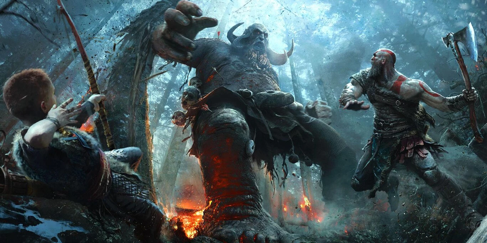

INICIO
Sony Santa Monica lleva trabajando en God of War: Ragnarok, con Cory Balrog como director creativo y Eric Williams a la cabeza, desde el lanzamiento de la anterior entrega, pero a mediados de 2019 aún aparecían ofertas de trabajo destinadas a seguir engordando el equipo de desarrollo.
Tal y como Christopher Judge, el actor encargado de ponerle voz y movimientos a Kratos, ha explicado hoy en una serie de tweets, en agosto de 2019 llegó un momento en el que ya no podía caminar. Tuvo que someterse a una operación de espalda, le reemplazaron ambas caderas y pasó por una cirugía de rodilla. En Sony Santa Monica decidieron no seguir adelante con su plan de lanzar God of War Ragnarok en 2021 y esperar, sin prisas ni presiones, a que Judge completara su rehabilitación para continuar.
Jugabilidad y modos de juego
Tras triunfar como uno de los últimos grandes juegos de PS4 con su particular plano secuencia, God of War: Ragnarok mantendrá un mismo estilo de acción y cinematografía.
Gracias al nuevo DualSense incorporará mejoras como la vibración háptica, que nos hará notar cuando Kratos arroje su hacha Leviathan a algún enemigo tanto al lanzarla y recogerla, así como cuando haga uso de su escudo.
Atreus volverá a acompañar a Kratos durante cada batalla y se compenetrarán mejor todavía con nuevos ataques y combos para hacer frente a los enemigos. Eso sí, estos tampoco se andarán con tonterías y por lo tanto, para que resulte más desafiante, también dispondrán de más maneras de atacar y defenderse de los impactos de los jugadores./p>
Las Espadas del Caos será una de las herramientas más demoledoras de nuestro poderoso protagonista, pudiendo emplearlas como gancho para escalar por los escenarios. Eso ha llevado a Williams a afirmar que gracias a esta función las zonas contarán con una mayor verticalidad, aunque eso implica que los enemigos también se aprovecharán de ello.
God of War Ragnarok: lanzamiento exclusivo en PS5 y PS4
God of War: Ragnarok llegará a PS5 y PS4 el próximo 9 de noviembre de 2022 con un total de cinco ediciones bajo el brazo entre las que hay varias especiales con jugosos añadidos. Os los explicamos a continuación: